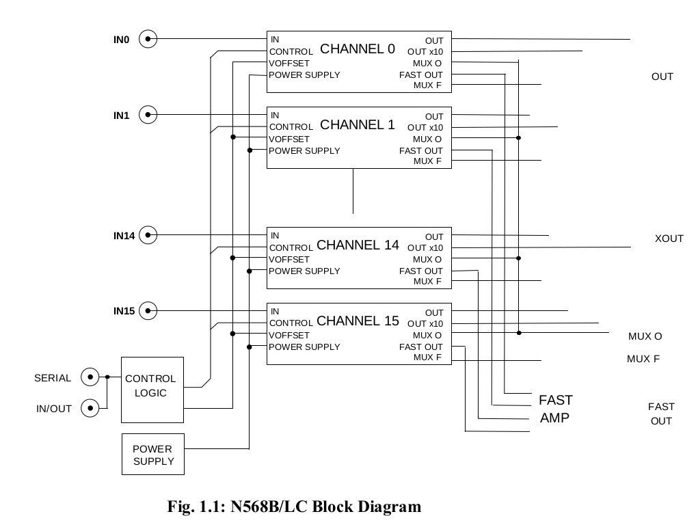
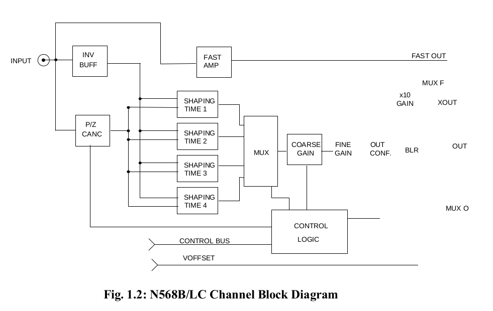
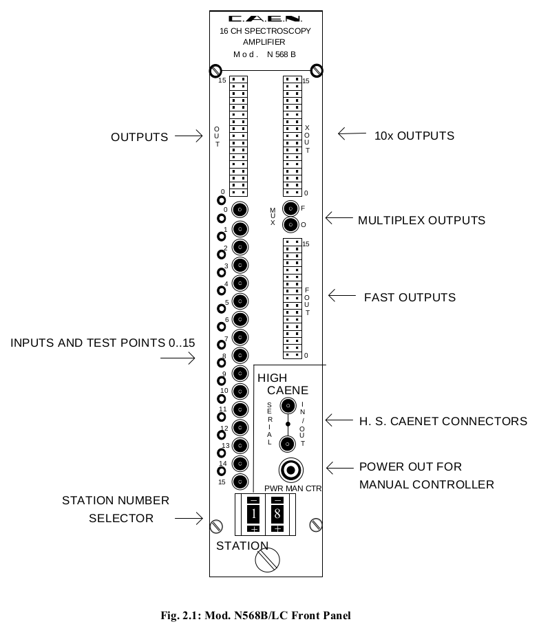
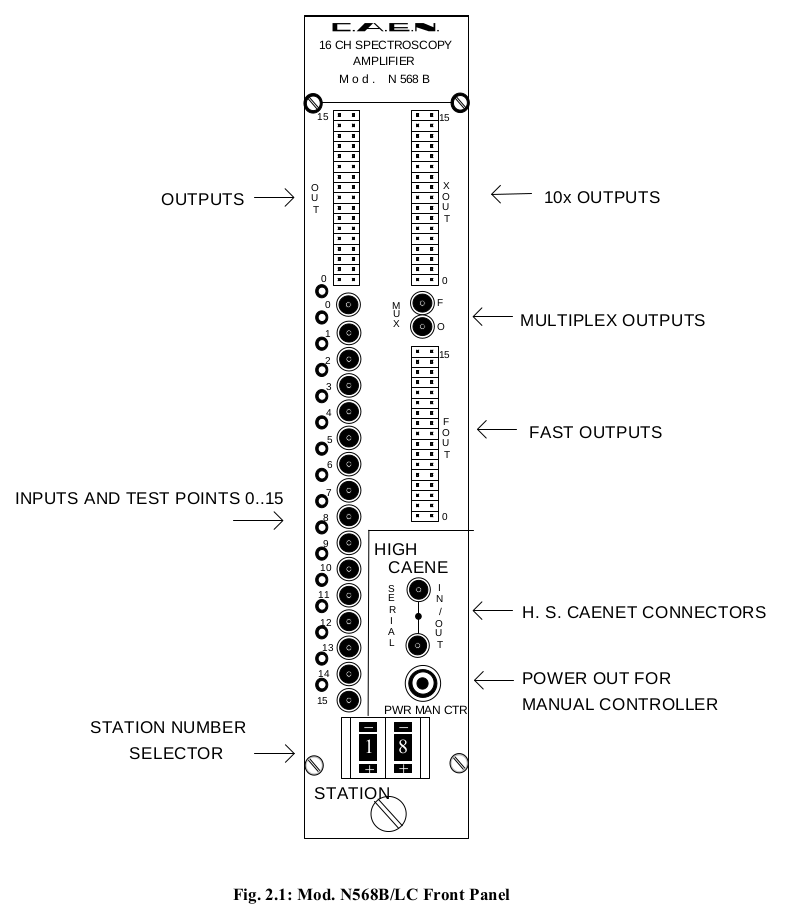

CAEN N568B/N568LC 16 CHANNEL Spectroscopy Amplifiers
说明书 N568B/N568LC
It accepts the typical outputs generated from nuclear particle detectors connected with preamplifiers having an output signal pulse characterised by a fast rise time and a slow fall time. With 16 independent channels, this unit allows the optimization of cost and size in multi-detector systems.
For each channel the pole-zero cancellation (PZ), the shaping time, the amplification gain and the output inversion are remotely programmable (by CAMAC, VME, Standard PC or Manual Controller) via HIGH SPEED CAENET line.
The shaping time can be selected from 0.2 μs to 6 μs. The fine gain and coarse gain ranges allow a choice accuracy from 0.15 to 480. The working parameter values are automatically stored in a nonvolatile memory. The inputs and the outputs of this module are accessible on the front panel.
A Gaussian Output is provided either with the programmed gain (OUT) or with a further 10x amplification (XOUT). The Gaussian Output can be set either as inverted or non-inverted.
A COMMON OFFSET can be programmed via CAENET and allows to shift the baseline of the output.
An FOUT output provides a fast amplification for timing purposes (fixed gain factor of 20). A "MUX O" and a "MUX F" output allow to monitor respectively the output and the fast output of a single channel selected via CAENET.
Two LEMO 00 connectors are foreseen for the CAENET line and a LED indicates the electrical condition of the CAENET network. When several modules are connected to the CAENET network, their identification is obtained by the thumb-wheel switches located on the front panel: up to 99 N 568B/LC modules are controlled via 50 Ω coaxial cable at 1 MB transmission speed. Allowed controllers are the Manual Controller (Mod. A 250), the CAMAC (Mod. C 117 B), the VME (Mod. V 288) or the Standard PC (Mod. A 303, A303A and A1303) H. S. CAENET Controllers.
The communication between the Host computer system and the HIGH SPEED CAENET controller is performed via standard functions and cycles (CAMAC and VME systems) or via a standard memory or I/O mapped mode for a standard PC (for more detailed information see the relevant Technical Information Manual). The communication protocol and the meaning of the recognized command codes are always the same, independently from the used controller.


 
